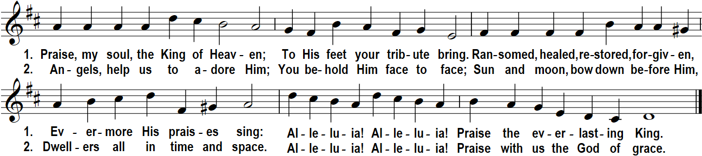
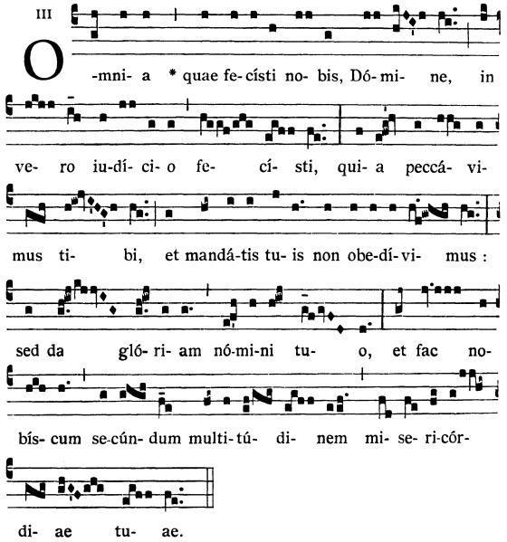
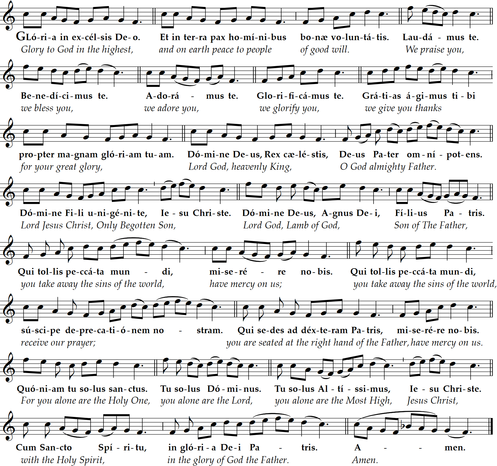

Penitential Rite

Twenty-sixth Sunday in Ordinary Time
6 PM Mass
Prelude “Concerto in A Major” G. Gentili (1669-1737) arr. J.G. Walther (1684-1748)

All that you have inflicted upon us, O Lord,
has been dealt out in true justice,
for we have sinned against you
and we have failed to obey your commandments;
but give glory to your name and deal with us
according to the abundance of your mercy.


Thus says the LORD:
You say, "The LORD's way is not fair!"
Hear now, house of Israel:
Is it my way that is unfair, or rather, are not your ways unfair?
When someone virtuous turns away from virtue to commit iniquity, and dies,
it is because of the iniquity he committed that he must die.
But if he turns from the wickedness he has committed,
and does what is right and just,
he shall preserve his life;
since he has turned away from all the sins that he has committed,
he shall surely live, he shall not die.
► Brothers and sisters:
If there is any encouragement in Christ,
any solace in love,
any participation in the Spirit,
any compassion and mercy,
complete my joy by being of the same mind, with the same love,
united in heart, thinking one thing.
Do nothing out of selfishness or out of vainglory;
rather, humbly regard others as more important than yourselves,
each looking out not for his own interests,
but also for those of others.
Have in you the same attitude
that is also in Christ Jesus, ••
Who, though he was in the form of God,
did not regard equality with God
something to be grasped.
Rather, he emptied himself,
taking the form of a slave,
coming in human likeness;
and found human in appearance,
he humbled himself,
becoming obedient to the point of death,
even death on a cross.
Because of this, God greatly exalted him
and bestowed on him the name
which is above every name,
that at the name of Jesus
every knee should bend,
of those in heaven and on earth and under the earth,
and every tongue confess that
Jesus Christ is Lord,
to the glory of God the Father.
Jesus said to the chief priests and elders of the people:
"What is your opinion?
A man had two sons.
He came to the first and said,
'Son, go out and work in the vineyard today.'
He said in reply, 'I will not,'
but afterwards changed his mind and went.
The man came to the other son and gave the same order.
He said in reply, 'Yes, sir, 'but did not go.
Which of the two did his father's will?"
They answered, "The first."
Jesus said to them, "Amen, I say to you,
tax collectors and prostitutes
are entering the kingdom of God before you.
When John came to you in the way of righteousness,
you did not believe him;
but tax collectors and prostitutes did.
Yet even when you saw that,
you did not later change your minds and believe him."
Homily + Profession of Faith
I believe in one God, the Father almighty,
maker of heaven and earth,
of all things visible and invisible.
I believe in one Lord Jesus Christ,
the Only Begotten Son of God,
born of the Father before all ages.
God from God, Light from Light, true God from true God,
begotten, not made, consubstantial with the Father;
through him all things were made.
For us men and for our salvation he came down from heaven,
and by the Holy Spirit was incarnate of the Virgin Mary,
and became man.
For our sake he was crucified under Pontius Pilate,
he suffered death and was buried,
and rose again on the third day
in accordance with the Scriptures.
He ascended into heaven
and is seated at the right hand of the Father.
He will come again in glory to judge the living and the dead
and his kingdom will have no end.
I believe in the Holy Spirit, the Lord, the giver of life,
who proceeds from the Father and the Son,
who with the Father and the Son is adored and glorified,
who has spoken through the prophets.
I believe in one, holy, catholic and apostolic Church.
I confess one Baptism for the forgiveness of sins
and I look forward to the resurrection of the dead
and the life of the world to come. Amen.
Prayer of the Faithful + Offertory + Liturgy of the Eucharist
“Upon the rivers of Babylon, there we sat down and we wept, as we remembered you, O Zion.”
May the Lord accept the sacrifice at your hands,
for the praise and glory of his name, for our good, and the good of all his holy Church.


Deliver us Lord from every evil, graciously grant peace in our day, that by the help of your mercy we may be always free from sin
and safe from all distress, as we await the blessed hope, and the coming of our Savior, Jesus Christ.

Lord, I am not worthy that you should enter under my roof, but only say the word and my soul shall be healed.
1. Though the arrogant utterly scorn me,
I do not turn from your law.
When I recite your judgments of old
I am comforted, LORD.
---
2. Rage seizes me because of the wicked;
they forsake your law.
Your statutes become my songs
wherever I make my home.
---
3. Even at night I remember your name
in observance of your law, LORD.
This is my good fortune,
for I have kept your precepts.

Queen, mother of mercy: our life, sweetness, and hope, hail. To thee do we cry, poor banished children of Eve.
To you we sigh, mourning and weeping in this va ley of tears.
Turn then, our advocate, those merciful eyes toward us. And Jesus, the blessed fruit of thy womb, after our exile, show us.
O clement, O loving, O sweet Virgin Mary
"St. Michael the Archangel, defend us in battle. Be our protection against the wickedness and snares of the devil.
May God rebuke him, we humbly pray; and do thou, O Prince of the heavenly hosts, by the power of God,
cast into hell Satan and all the evil spirits who prowl about the world seeking the ruin of souls. Amen."
Postlude “Toccata in D Major (Andante Spiritoso)” Francisco Xavier Baptista (c. 1730-1797)